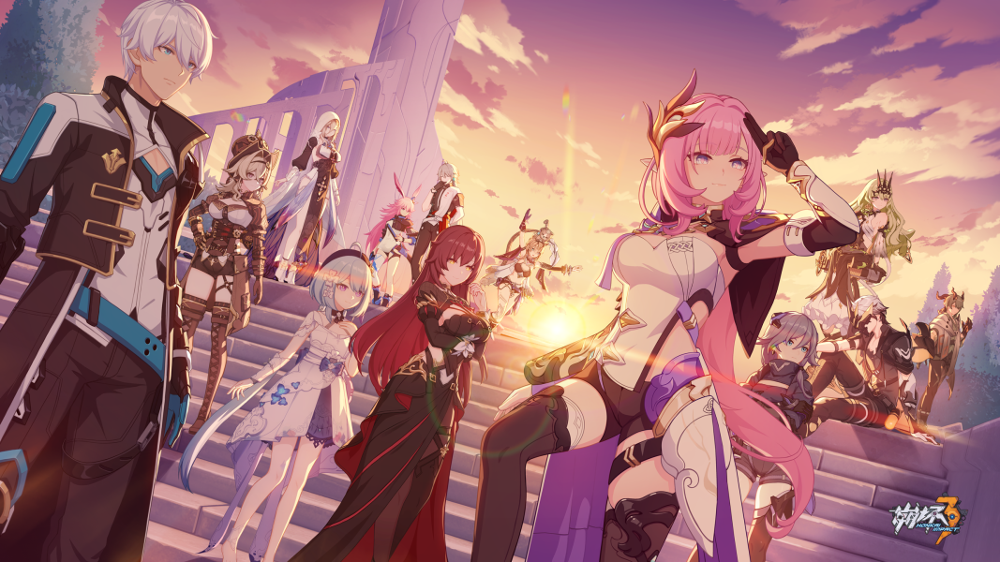

这是十三位逐火者未尽的征程
逐火十三英桀是游戏《崩坏3》中对“约束的惨剧”后，逐火之蛾仅存13位融合战士的统称。
“约束的惨剧”后，逐火之蛾仅存13位融合战士的统称。
于组织，他们是不可替代的重要资产，因此独立的编制有其必要意义。
出于某些理由，每位成员被授予了位次和名为“刻印”的称号。
以此十三“兵器”，背负文明存续的希望。
实际上，逐火之蛾高层最初并不认同“十三英桀”，并驳回了这一提议，只同意让其中五人成立“五英桀”。但爱莉希雅拒绝妥协。之后通过伊甸私下出资，十三人自行组成这一团体，逐渐获得了公认。
在游戏《崩坏3》中，会出现名为“崩坏”的灾害，逐火之蛾就是前文明对抗“崩坏”所创建的组织。
融合战士是逐火之蛾对抗崩坏的主要手段。
在“崩坏”灾害中，会出现名为“律者”的生物；或者说，最为严重的灾害都是律者所引发的的。
律者的力量远远是人类所不及的，为此，人们通过科技等手段，将崩坏兽（“崩坏”灾害表现形式之一）的因子融合进拥有崩坏适应的人类身体之中，融合战士便诞生了。但即使如此，这项手术的成功率依旧很低，也并非所有拥有崩坏适应的人愿意接受手术，毕竟失败的代价......
记忆回溯装置，但是杂乱无章。由于抽离记忆的技术非常苛刻，只有十三英桀的记忆保存在此。十三英桀的记忆所组成的数据空间，是世界蛇（当代文明对抗崩坏的势力之一）的干部试炼之地，为圣痕觉醒者解开某种『禁制』。
当来访者意识疲惫时会有保护机制，保护意识不受侵扰，乐土的维护者『克莱因』会为你保驾护航。来访者更容易遇见怀有与自己意志相符合的英桀。
是英桀们曾存在世的象征，流传给后世的不该是冷冰冰的知识与技术，而是那些身为英桀的荣耀与为之战斗的理由，用生命谱写的颂歌。